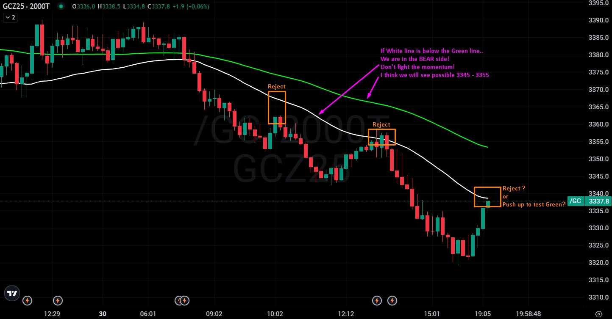
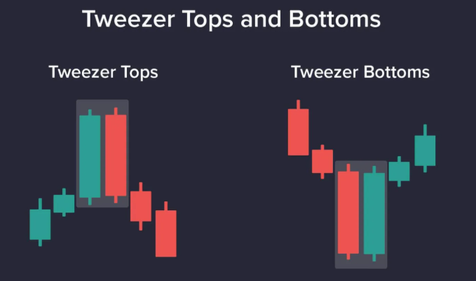
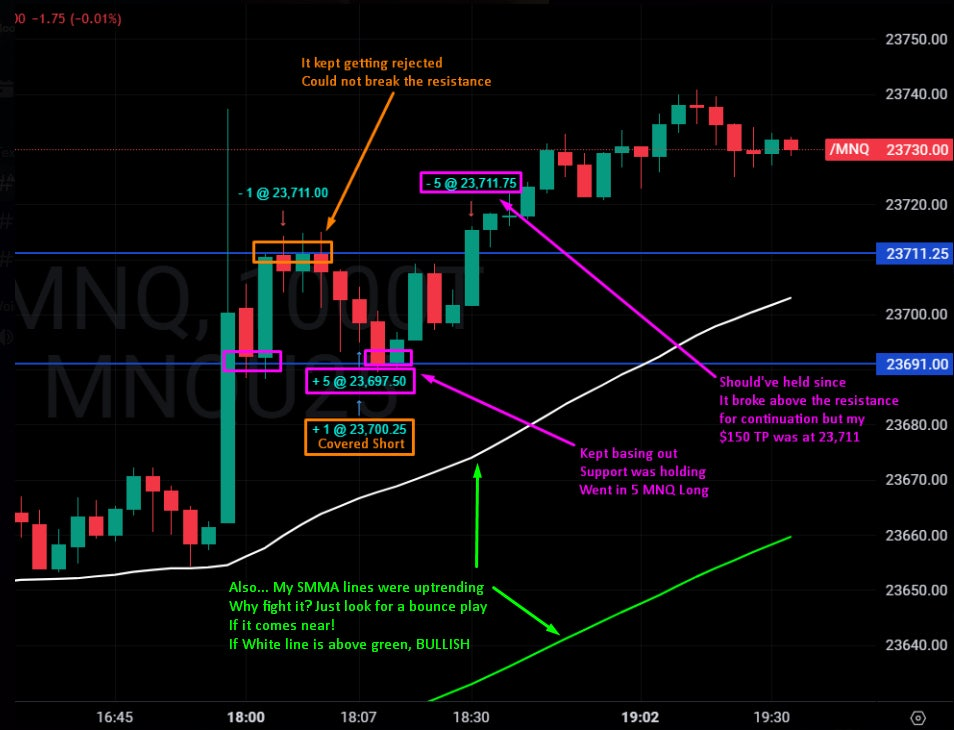

SMMA, Candlestick Pattern, Resistance/Support
SpaceRanger7 그라인더
2025.08.02. 21:11조회 1,291
계좌 $52,600 부터는 "Golden Time" 왜? How?
여러분! 계좌 leverage 하시고 profit 은 적당이!
20PAs x $100 a day = $2000 Daily
$2000 a day x 8 days = $16,000
8일 $16,000 출금 신청! 부족해요? $16,000 먹고 살수 있잖아요 ^^
한달이면 $48,000.. 1년이면 $500,000 정도?
하루에 $100 벌고 1년에 $500,000이면... ㅎㅎ
마음이 급할수록 차분하게! 마음가짐!
끝이 없는 시장 Profit 더 많이 번다고 남들 보다 더 앞선다는거 없어요.
더 많이 벌려면 risk 해야 하는데... 다음날 부자 될수 있는것도 아니고
출금 guarantee 하시고 매매 risk 낮추시고
정신.. 마음가짐부터 우선! 그리고 매매!
다들 화이팅!
도움이 됬으면 좋겠어요!
100T, 500T, 1000T, 2000T and 5000T
가장 깨끗한 차트 찾기!
골드 보면서 2000T 가장 깨끗했어요
SMMA 선들이랑 잘 reject 하고 내려가는 계단을 만들죠! (꼭 SMMA 선에 touch 해야 하는 보장은 없어요, 가까이만)
여기서 Candlestick pattern 을 보고 승율 % 올리죠!

6시 시장 오픈했었어요!
1000T이 가장 깨끗했죠
SMMA 는 롱이 더 좋고 전 계단 모양 기다리고 있었어요.
첫 계단 form 했죠?
Resistance 23711 / Support 23691 계속 rejection 하더군요. (100T, 500T 보면 rejection 더 많이 보여요)
23711 계속 rejection 하길레 Short 했어요, Target은 support zone쯤 이었어요.
보이는 이익... Support 가까움에 take profit 했어요. (See profit take profit! 이렇게 해서 돈 잃은분들 없잖아요)
여기서 보이는게 Tweezer Tops and Bottoms candle style! 매매 승율 올리겠죠?
Support 보다 더 내려가니는 volume이 없었고, 여기서 SL은 previous candle wick 해두고 Long position 들어 갔어요.
계약 5MNQ 잡고 롱! TP는 resistance 에 잡아놨어요.
Previous resistance 뚫으면 continuation long 이겠죠?
그런데 전 필요한 profit 들고 끝냈습니다

덕두
스승님…오늘도 좋은글 감사드립니다..!
2025.08.02. 21:13
SpaceRanger7
See profit take profit 여러번 하시면 $100 - $150 채워요!
꼭 한번에 $100 벌려고 하시지 말고 ^^
출금 축하드려요!
2025.08.02. 21:21
덕두
SpaceRanger7 넵, 명심하겠습니다!
감사합니당!!
2025.08.02. 23:25
까치산
vwap에 문제가 생겨서 이 전략을 사용하고 있지는 않지만..
너무 좋은 전략인것같아요..!!
다른계좌를 이전략으로 밀고가고싶네요
2025.08.02. 21:32
제이 트레이더
좋은글 감사합니다.
오늘 올린 영상 보셨을까요? 덕두님 대학생분께서 스페이스레인저님꺼보고 노력하시더라고요. 많은분들께 응원주셔서 감사합니다.
https://youtu.be/bNnUuOtgEjE?si=QFzYa9NMsntfYWEu
2025.08.02. 22:06
SpaceRanger7
봤습니다!
2025.08.02. 22:22
그라인더
정보글 감사합니다!
열심히 공부하겠습니다!!
혹시 버퍼 쌓으실 때부터 하루 100달러 목표로 하셨나요?!
2025.08.02. 22:07
SpaceRanger7
그렇게 하면 더욱더 안전하겠죠?
시간이 더 걸리지만, 2달 잡고 꾸준히 50k 계좌 $100불 처음부터 출금까지!
2025.08.03. 00:17
네버돈스탑
저도 스페이스 레인저님 SMMA 기법을 보고 따라 해보려고 했는데 쉽지가 않더라구요...
이렇게 자세히 알려주시는데...^^
오늘 설명으로 또 한가지 얻어가네요...
지금 까지는 SMMA를 단순히 이동평균선 매매법으로 생각하고 이용하려고 했었거든요.
근데 꼭 그선에 닿아야 한다는 강박? 때문에 진입이 안된다든지 아니면 그선을 넘어가는데도 손절을 걸어둔지점 까지 기다리는 매매를 했는데 그게 아닌거 같군요...
주말에 시간내서 이렇게 글을 올려주셨는데 나름 잘 소화해서 닌자의 리플레이로 복기를 해보겠습니다...
남은 주말 잘 보내세요~~
2025.08.02. 22:11
엘벧엘
좋은 글 항상 감사합니다.
2025.08.02. 23:49
06년생 프랍퍼
좋은글 감사합니다. SMMA 보실때 MNQ만 보시고 매매하시나요? 아니면 NQ도 따로 보시나요?
2025.08.03. 00:38
SpaceRanger7
NQ도 봐요 :)
2025.08.03. 03:02
GML
와 감사합니다.
2025.08.03. 07:03
밖준영
좋은글 감사합니다! 혹시 보시는 차트는 어디서 보시는걸까요???
2025.08.03. 10:35
SpaceRanger7
ProjectX
2025.08.03. 11:26
두두
감사합니다
2025.08.03. 12:11
분홍강아지
God.....
2025.08.03. 14:28
무한동력임
20년차입니다 한글 섦명이면 더 좋았을듯요
2025.08.03. 16:45
알파22
항상 감사합니다. 좋은 글 잘보고있습니다.
2025.08.03. 19:02
Johnny2023
스페이스 레인저님 혹시 volume 이나 rsi 등 이런지표는 같이 안보고 오로지 crossing 이랑 bear/bullish momentum side 랑 support resistance 만 보시나요??
2025.08.04. 15:54
efs
지지와 저항은 스윙의 전고점 전저점을 주로 보시나요? 피보나치 되돌림을 주로 보시나요?
2025.08.05. 07:51
csw1182
좋은정보 감사합니다^^
2025.10.09. 11:20
원본 : SMMA, Candlestick Pattern, Resistance/Support